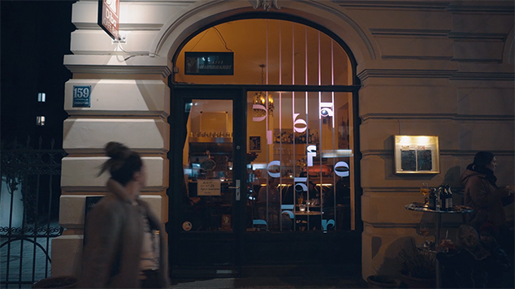
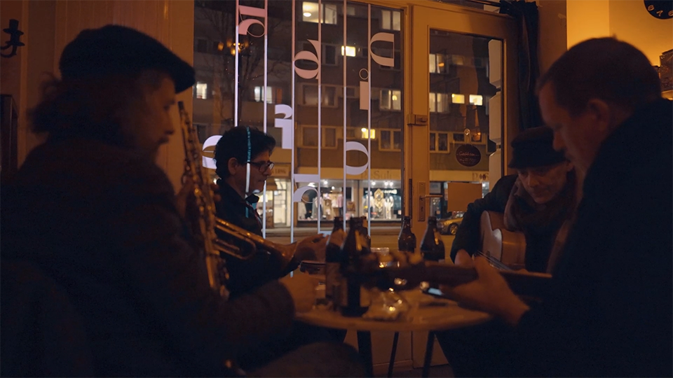
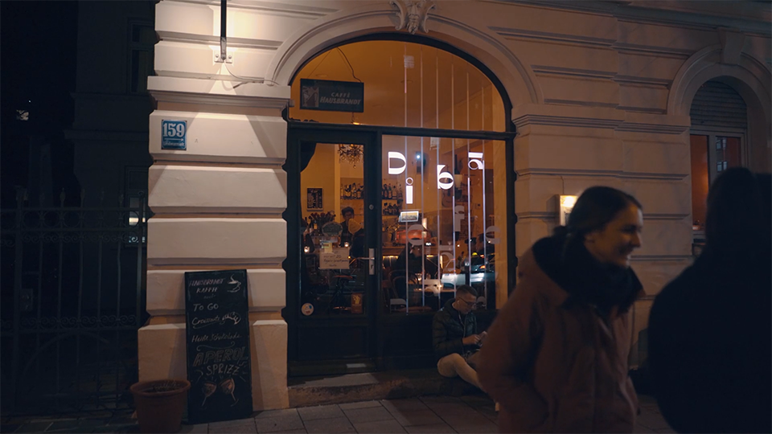
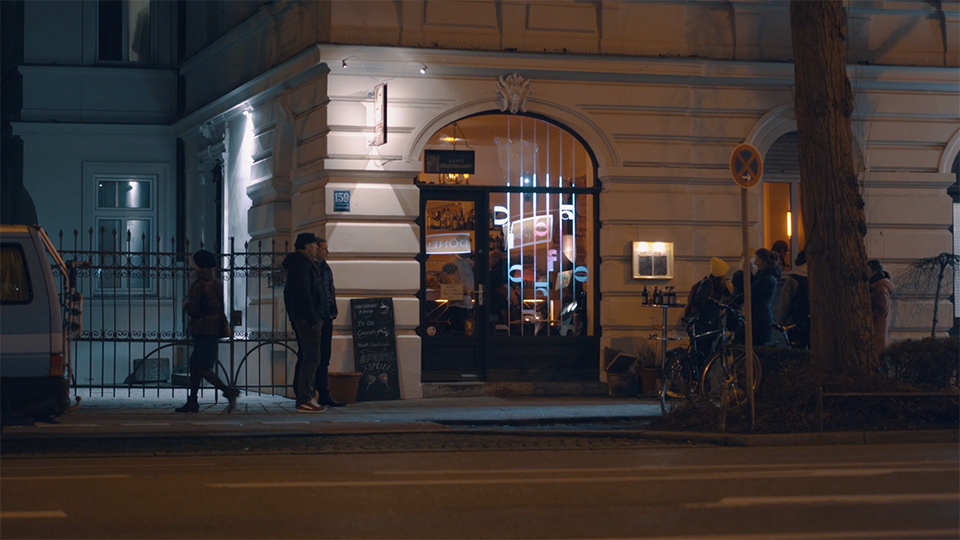
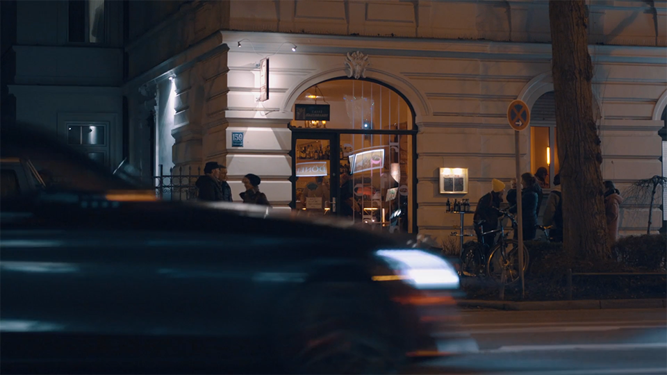
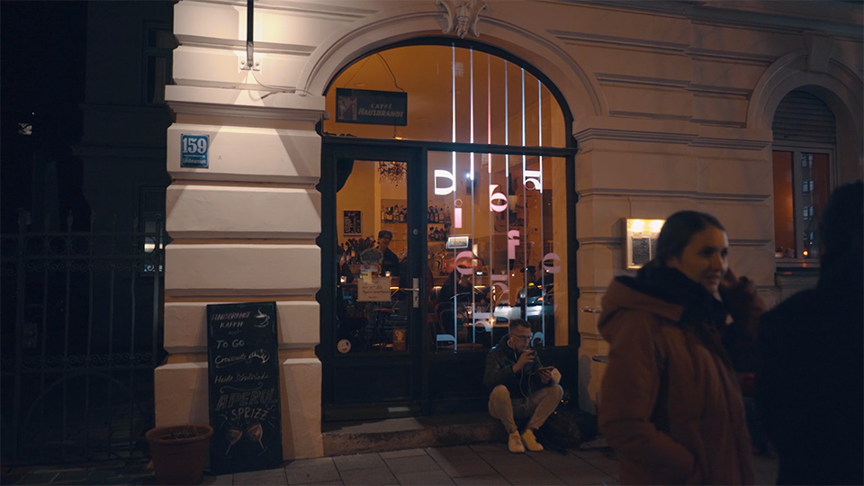
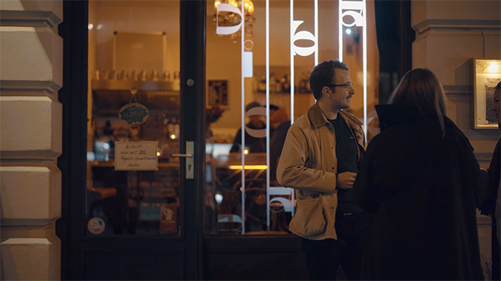

Window projection · Munich · 2023
A shop window as a stage.
In collaboration with Studio MOTOMOTO from Munich, a window projection was created for the Diba Cafe Bar — a bar where jazz sets the mood and evenings move slowly.

The visual and the acoustic intertwine. People passing outside are drawn in — not by advertising, but by movement.



The projection shows animated guitar strings moving to the rhythm, forming letters: the name of the bar. Animated typography and the warmth of the bar interior merge in the glass of the window.
The project was realized in collaboration with Studio MOTOMOTO, a Munich-based studio for generative and projected imagery.


